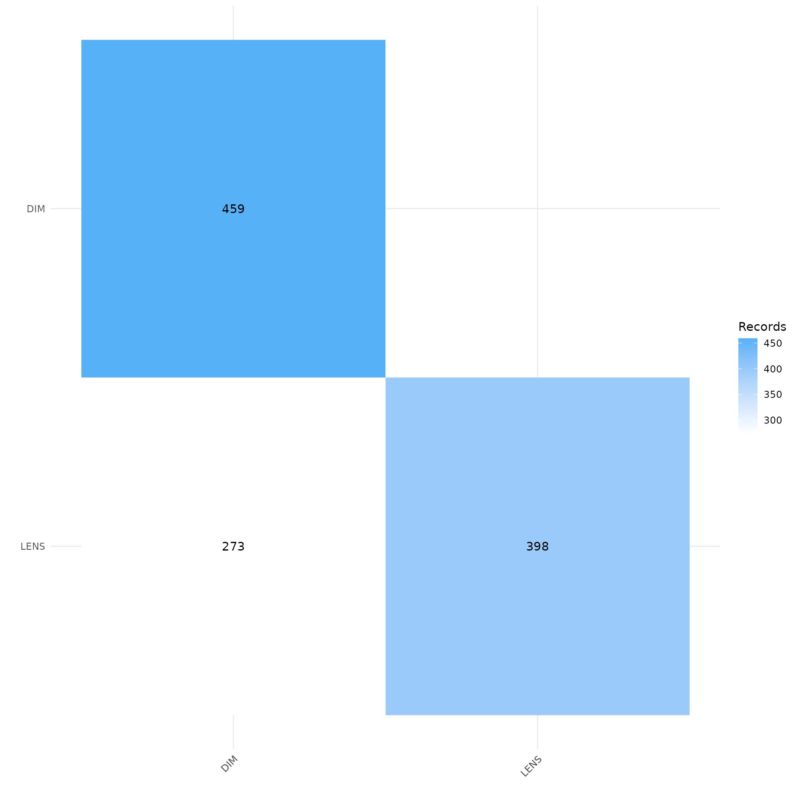
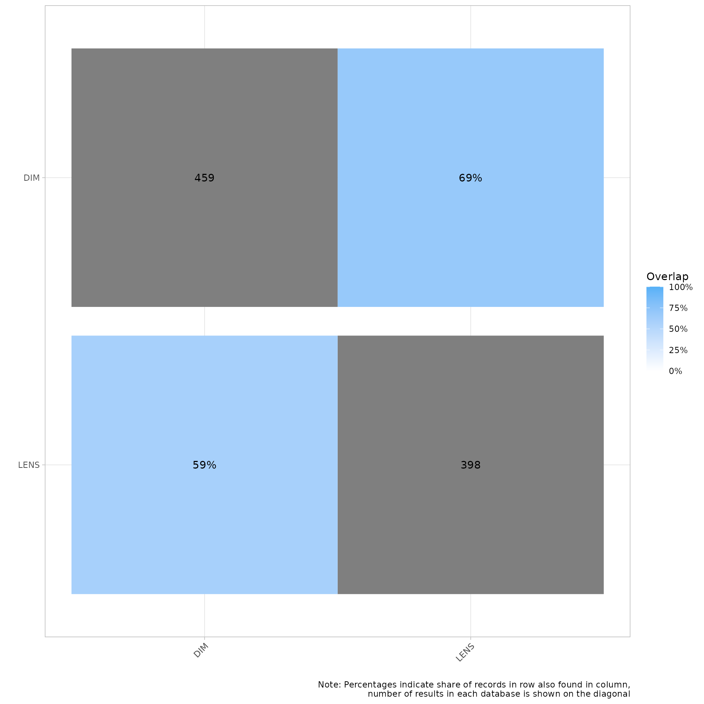
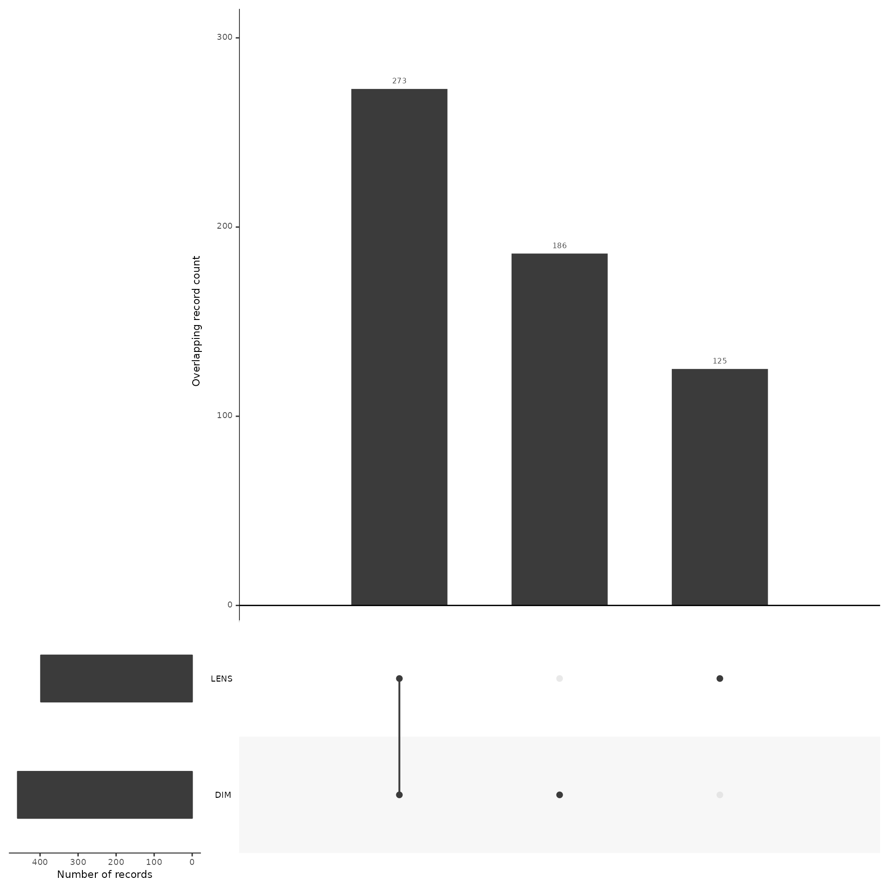
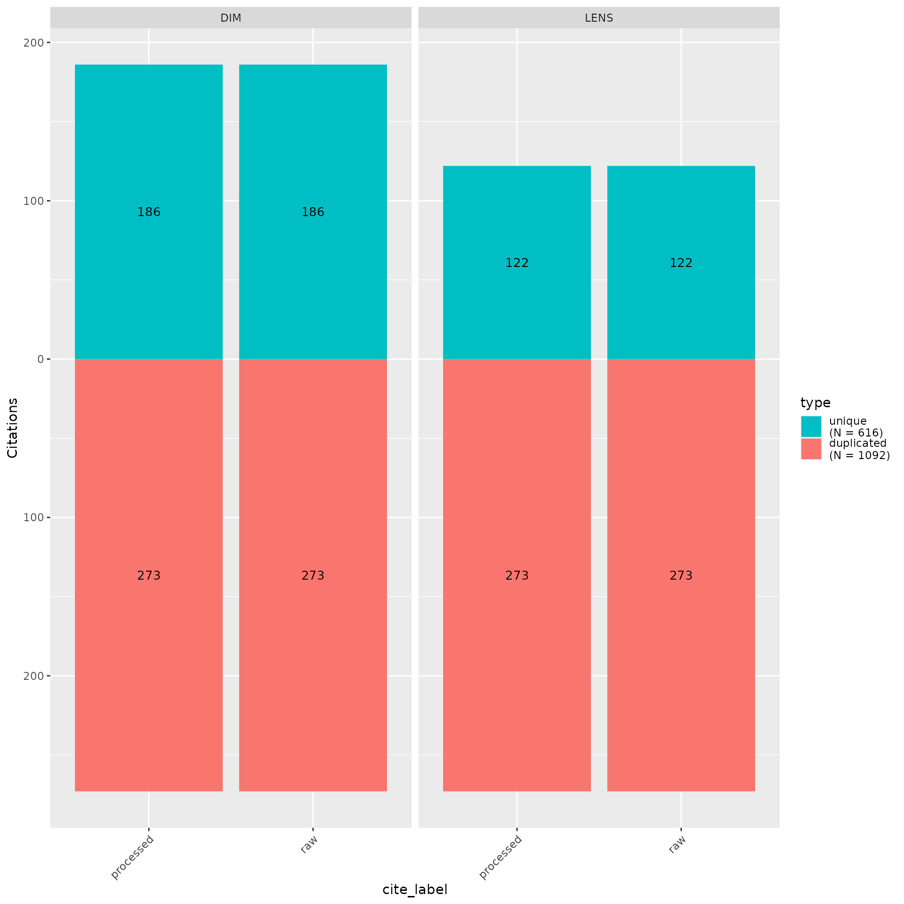

About this vignette
This vignette is strictly for internal troubleshooting
#Install the remotes packages to enable installation from GitHub
#install.packages("remotes")
#library(remotes)
#Install CiteSource
#remotes::install_github("ESHackathon/CiteSource")
#Load the necessary libraries
library(CiteSource)
library(dplyr)
#Import citation files from a folder
citation_files <- list.files(path = file.path("../vignettes/troubleshooting"), pattern = "\\.ris", full.names = TRUE)
#Print citation_files to double check the order in which R imported our files.
citation_files
#> [1] "../vignettes/troubleshooting/ProcessedDIM.ris"
#> [2] "../vignettes/troubleshooting/ProcessedLENS.ris"
#> [3] "../vignettes/troubleshooting/RAWDIM.ris"
#> [4] "../vignettes/troubleshooting/RAWLENS.ris"
# Import citation files from folder
citation_files <- list.files(path = "working_example_data", pattern = "\\.ris", full.names = TRUE)
# Print list of citation files to console
citation_files
#> [1] "working_example_data/AGRIS.ris" "working_example_data/CAB.ris"
#> [3] "working_example_data/EconLit.ris" "working_example_data/Final.ris"
#> [5] "working_example_data/GreenFile.ris" "working_example_data/McK.ris"
#> [7] "working_example_data/RM.ris" "working_example_data/TiAb.ris"
#> [9] "working_example_data/WoS_early.ris" "working_example_data/WoS_later.ris"
# Set the path to the directory containing the citation files
file_path <- "../vignettes/troubleshooting/"
metadata_tbl <- tibble::tribble(
~files, ~cite_sources, ~cite_labels,
"ProcessedDIM.ris", "DIM", "processed",
"ProcessedLENS.ris", "LENS", "processed",
"RAWDIM.ris", "DIM", "raw",
"RAWLENS.ris", "LENS", "raw",
) %>%
dplyr::mutate(files = paste0(file_path, files))
citations <- read_citations(metadata = metadata_tbl)
#> Import completed - with the following details:
#> file cite_source cite_string cite_label citations
#> 1 ProcessedDIM.ris DIM <NA> processed 460
#> 2 ProcessedLENS.ris LENS <NA> processed 395
#> 3 RAWDIM.ris DIM <NA> raw 460
#> 4 RAWLENS.ris LENS <NA> raw 395
dedup_results <- dedup_citations(citations, merge_citations = TRUE)
#> formatting data...
#> identifying potential duplicates...
#> identified duplicates!
#> merging citations...
unique_citations <- dedup_results$unique
# Count number of unique and non-unique citations from different sources and labels
n_unique <- count_unique(unique_citations)
# Create dataframe indicating occurrence of records across sources
source_comparison <- compare_sources(unique_citations, comp_type = "sources")
my_heatmap <- plot_source_overlap_heatmap(source_comparison)
my_heatmap
my_heatmap_percent <- plot_source_overlap_heatmap(source_comparison, plot_type = "percentages")
my_heatmap_percent
Plot overlap as an upset plot
my_upset_plot <- plot_source_overlap_upset(source_comparison, decreasing = c(TRUE, TRUE))
my_upset_plot
my_contributions <- plot_contributions(n_unique,
center = TRUE,
bar_order = c("search", "Screened", "Final")
)
my_contributions
#citation_summary_table(unique_citations, screening_label = c("Screened", "Final"))
#unique_citations %>%
# dplyr::filter(stringr::str_detect(cite_label, "Final")) %>%
# record_level_table(return = "DT")
#export_csv(unique_citations, filename = "citesource_working_example.csv", separate = "cite_source")
#export_ris(unique_citations, filename = "citesource_working_example.ris", source_field = "DB", label_field = "C5")
#export_bib(unique_citations, filename = "citesource_working_example.bib", include = c("sources", "labels", "strings"))
#citesource_working_example <-reimport_csv("citesource_working_example.csv")
#citesource_working_example <-reimport_ris("citesource_working_example.ris")